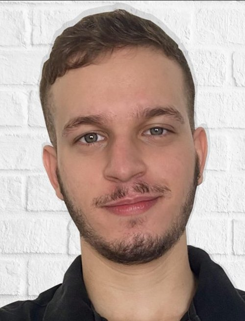
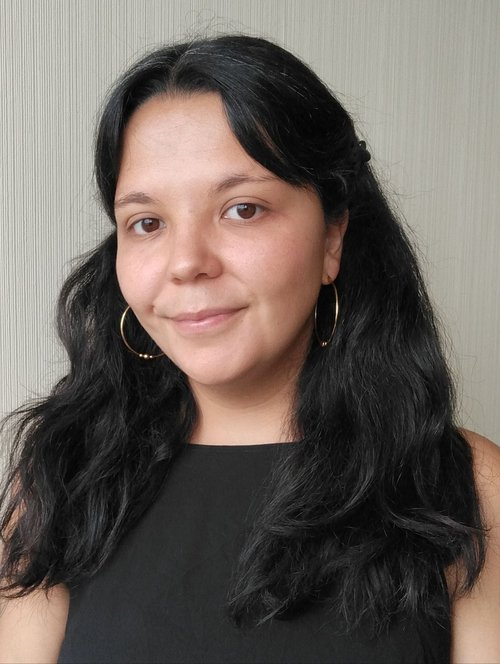
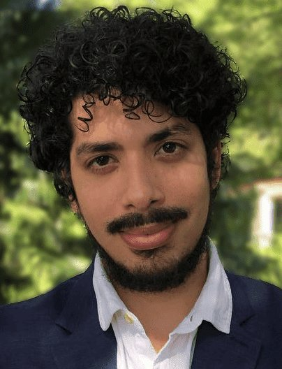
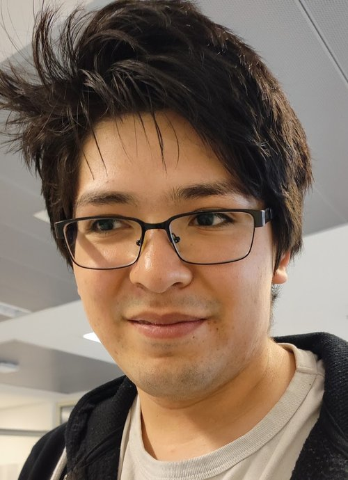
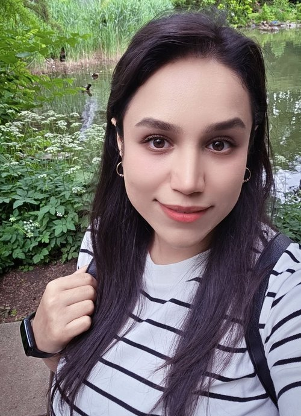
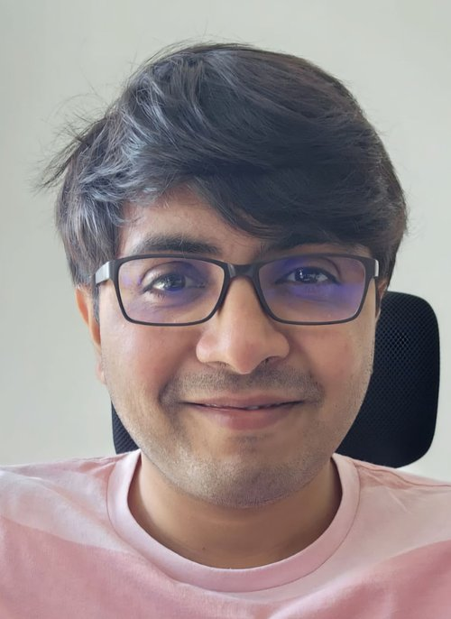

Works on spatial population dynamics in heterogeneous landscapes, focused on competition-colonization tradeoffs and habitat fragmentation.

Investigates regime shifts in dryland ecosystems, combining functional network analysis and Bayesian inference in simulated and remote-sensing data.

Studies spatial structures in the plant–fungi interaction underground, and their effects on the stability and productivity of ectomycorrhizal mutualism.
Combines analytical and numerical approaches to study pattern formation, and applies population-dynamics frameworks to opinion shifts, disease spread, and marketing strategies.

Studies how individual movement behaviors shape population and community dynamics, using numerical simulations, spatial pattern analysis, and animal tracking data.
Studies how water–vegetation feedbacks shape plant interactions and large-scale spatial patterns, using nonlinear dynamics, pattern formation, and bifurcation theory.

Studies spatial pattern formation in arid ecosystems, combining nonlinear dynamics and statistical mechanics with remote-sensing and satellite imagery.

Investigates how precipitation and wind patterns impact self-organized vegetation patterns in drylands. Supported by an Early Career Fellowship from the Scultetus Center at CASUS.

Explores how movement behavior shapes animal encounters and their ecological consequences, integrating stochastic simulations, analytics, and tracking data.
Studies stochastic evolutionary dynamics, focused on how spatial structure and quorum-sensing regulation jointly shape the evolutionary stability of cooperation in microbial systems.